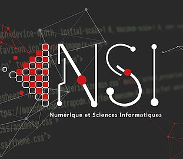

Présentation de la spécialité NSI
Découvrir l'informatique et apprendre à programmer au lycée
Pourquoi choisir la spécialité NSI ?
La spécialité NSI (Numérique et Sciences Informatiques) est une spécialité proposée au lycée à partir de la classe de première et qui peut être poursuivie en terminale.
Cette matière permet de découvrir et d'approfondir les bases de l'informatique comme : la programmation, les algorithmes, les réseaux informatiques, le fonctionnement des ordinateurs et les bases de données.
La spécialité développe également des compétences utiles dans la vie de tous les jours :
- Résolution de problèmes
- Travail en équipe
- Créativité
- Recherche d'information
- Autonomie

Un enseignement concret
En NSI, les élèves réalisent de nombreux projets pratiques comme :
- Créer des programmes en Python
- Développer des petits jeux
- Créer des sites web
- Comprendre comment fonctionne Internet
La spécialité NSI au lycée Robert Badinter
Au lycée Robert Badinter, les élèves bénéficient d’un accompagnement de qualité avec des enseignants passionnés qui les aident à progresser et à réussir leurs projets tout au long de l’année.